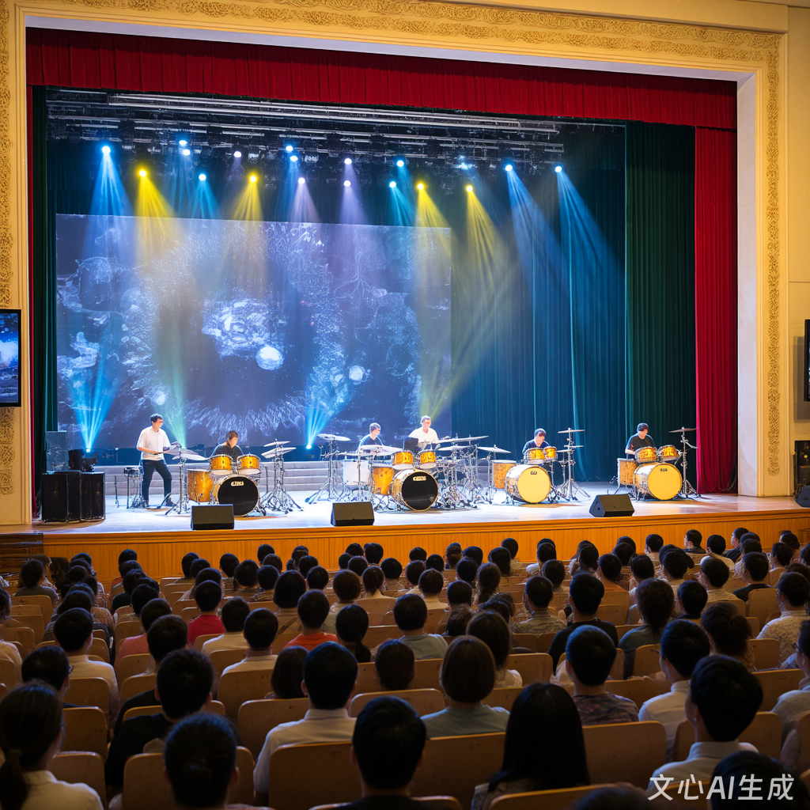

一、节奏为魂，青春共鸣 社团名称：星火击韵打击乐社团 成立时间：2015年 社团定位：集艺术实践、文化交流与创新创作于一体的综合性打击乐团体 星火击韵打击乐社团诞生于一群年轻人对节奏的纯粹热爱。从最初在校园角落用课桌敲击出的简单节拍，到如今拥有专业乐器与系统的训练体系，社团始终 以“传承打击乐文化，激发青春创造力”为使命。我们相信，打击乐不仅是音乐的分支，更是跨越语言与文化的通用语言——它能传递力量、治愈心灵， 更能凝聚团队的力量。无论是中国传统鼓乐的雄浑，还是拉丁非洲鼓的奔放，亦或是现代爵士鼓的灵动，我们致力于通过多样化的风格探索，让更多人感受 节奏的魅力。
二、组织架构与专业培养 社团采用“分层培养+项目制”管理模式，下设四大核心部门： 表演部：按乐器类型分为中国鼓组、拉丁鼓组、键盘打击乐组及现代打击乐组，定期进行合奏训练与舞台表现力提升； 创作部：鼓励成员尝试节奏编排、原创曲目开发，甚至融合电子音乐、环境音效等元素，打造“新派打击乐”； 活动部：策划社团品牌活动，如专场音乐会、跨校交流赛、公益演出等，并负责对外联络与资源整合； 后勤部：管理乐器维护、场地协调及宣传推广，通过短视频平台运营积累超5万粉丝，扩大社团影响力。
三、师资力量与资源支持 社团与国内多位知名打击乐演奏家建立长期合作，定期邀请中央音乐学院、中国音乐学院等高校教授及李飚、张景丽等大师的弟子开展大师课。同时，学校 艺术教育中心为社团提供专业排练厅及价值数十万元的乐器设备，包括中国大鼓、非洲金贝鼓、马林巴琴、爵士鼓等，满足多样化表演需求。
四、社团文化与价值观 “以节奏为名，以青春为歌”是社团的核心文化。我们倡导“三心精神”： 初心：无论水平高低，始终保持对打击乐的热爱； 匠心：在每一次击打中追求精准与美感； 同心：通过合奏培养团队协作与责任感。 在这里，成员不仅是乐手，更是文化的传播者与创新的实践者。
为了让大家更好地了解打击社的日常，本学期计划安排如下几项主要活动。 具体时间可能会根据学校统一安排略作调整，详情请关注社团通知。
| 打击乐社 2025 春季学期活动安排表 | |||
|---|---|---|---|
| 活动名称 | 活动时间 | 活动地点 | 负责人 |
| 新成员见面会 | 3 月第 2 周 周五晚 | 学生活动中心 音乐教室 301 | 林娜 |
| 打击乐器基础教学公开课 | 每周周三、周六下午3点 | 李晓 | |
| 大师工作坊 | 每周二、四、六晚18:30-20:30 | 操场东侧草坪 | 李星河教授 |
| “击情夏日”专场音乐会 | 每年6月 | 大学生活动中心 大礼堂 | 时祈月 |
| “节奏无界”跨校交流赛 | 每学年秋季11月 | 大学生活动中心 大礼堂 | 5所高校打击乐社团负责人 |
补充： 1.击情夏日”专场音乐会，融合传统民乐、现代爵士、世界音乐等元素，展现打击乐的多元魅力；曾以《龙腾鼓跃》《非洲狂想曲》等曲目获省级大学生艺 术展演一等奖。 2.“节奏无界”跨校交流赛，联合周边5所高校打击乐社团，通过即兴合奏、曲目演绎等形式切磋技艺，推动区域打击乐文化交流，形成“高校打击乐联 盟”，为特殊教育提供支持，为听障儿童设计“触觉打击乐”课程，通过震动感知节奏，获媒体报道。 3.上表仅列出了部分代表性活动，日常还会有小型即兴合奏、经验分享等活动，我们将还会组织基础训练（节奏型练习、肢体协调训练、力度控制），分组 排练（各乐器组针对曲目进行细节打磨），合奏合成（全团联合排练，培养默契与舞台表现力）等训练。 更多活动欢迎有想法、有创意的同学参与策划。
下面是一张往届校园音乐会的照片示意。点击图片，可以查看更详细的活动介绍页面。
图中为上学期“打击乐社音乐节：节奏燃情，青春跃动，打击乐社成员的集体演出场景。这场音乐节，不仅是打击乐社秀技艺的“大舞台”，更是青春激情 的“大释放”。乐手们用汗水和热情，把打击乐的魅力展现得淋漓尽致，给校园文化添上了最绚烂的一笔。这哪是音乐会啊，分明是一场青春的狂欢派对！
社员小林（化名）入学时零基础，因被社团宣传片中《龙腾鼓跃》的震撼场面吸引而加入。 在学长学姐的耐心指导下，他从手鼓开始练习，逐渐掌握复杂节奏型。 2023年专场音乐会上，他作为鼓组领奏完成人生首次独奏，下台后激动地说：“是节奏让我找到自信！”
社员小雨（化名）曾因学业压力陷入焦虑，加入社团后通过打击乐释放情绪。 在公益演出中，她为自闭症儿童设计节奏游戏。 看到孩子们随鼓点微笑时，她感慨：“原来音乐真的能改变生命。”
高校交流活动中，社员们与东京高校乐手即兴合奏。 语言不通，但节奏让彼此心意相通。 活动结束后，成员小杰（化名）在日记中写道：“那一刻，我明白了音乐无国界的真谛。”
如果你也喜欢音乐，期望在大学生活中拥有一段与打击乐相关的美好回忆， 欢迎加入我们，一起在琴弦上演奏青春的旋律。
请认真填写以下信息，确保联系方式准确无误。 提交后，社团会通过电话或短信的方式通知面谈或试音时间。
提交表单后，如需修改信息，可以再次填写并提交最新的一份。
校园打击乐社 · 2025 招新示例网页